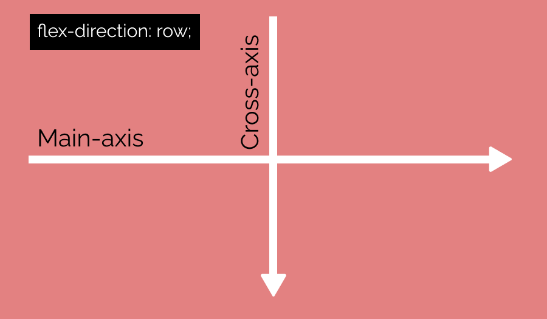
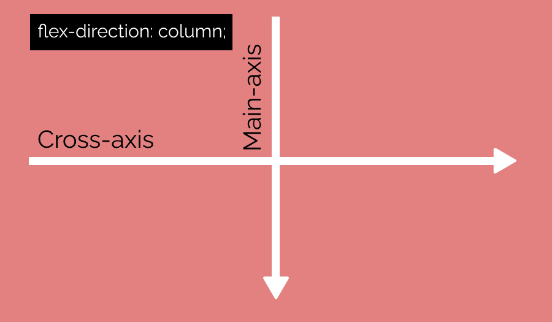
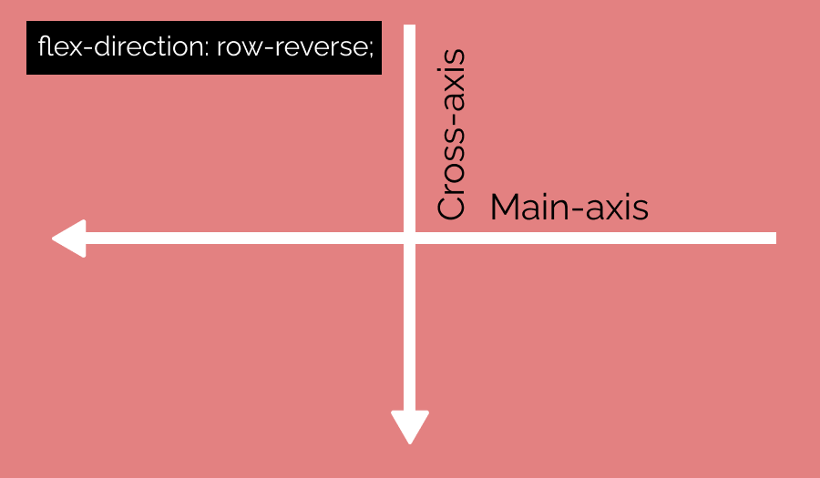
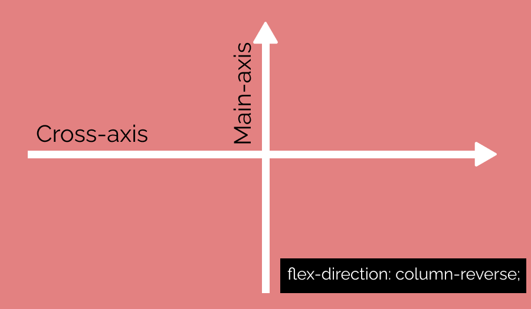

-
Propiedades
Propiedad Valor displayflex flex-directionrow | column | row-reverse | column-reverse flex-wrapwrap | wrap-reverse | nowrap flex-flow<flex-direction> || <wrap> justify-content(main-axis)center | space-evenly | space-between |space-around | space-evenly | flex-start | flex-end align-items(cross-axis)center | flex-start | flex-end | baseline | stretch align-content(cross-axis, solo si existe la propiedad wrap)center | space-evenly | space-between space-around | space-evenly | flex-start | flex-end align-self(cross-axis)auto | flex-start | flex-end | center | baseline | stretch flex(shorthand)<flex-grow> || <flex-shrink> || <flex-basis> flex-grow: <number>flex-shrink: <number>flex-basis: <length> | auto
order<integer> El valor por defecto es 0 e indica el orden de los elementos
-
Declarando Flexbox
-
Opera mediante contenedores(padre) e items(hijos)
-
En el contenedor se declara la pripoedad
display:flex -
Por defecto, las propiedades se inicializan en
rowy siempre pordemos cambiar la orientación
-
-
Los ejes en Flexbox
-
Al entrar al modo flexbox, se crean dos ejes principales: Cross-axis y Main-axis
-
El cross axis se refiere a la orientación perpendicular al main axis. Por ejemplo, si el main axis es el eje X, el cross axis sería el eje Y.
-
El main axis se refiere a la orientación principal del contenedor. Por ejemplo, si el main axis es el eje X, el cross axis sería el eje Y.
-
Flex-direction

flex-row 
flex-column 
flex-row-reverse 
flex-column-reverse -
Flex wrap
-
Define el comportamiento de los flex-items cuando su tamaño sumado rebasa el tamaño del main-axis
-
Permite que los items se envuelvan en la orientación principal del contenedor.
-
El valor por defecto es
nowrap, lo que significa que si los elementos sopasan el tamaño del flex container, los items se encogen. -
El valor
wrapcreará una nueva línea cuando los elementos sobrepasen el tamaño del contenedor del main-axis. Dependiendo de la orientación.en fila o columna.
-
-
-
Alineamiento en Flexbox
-
En Flexbox se puede repartir el espacio disponible tanto en el main como en el cross. Esto es el alineamiento.
-
Para aplicar el alineamiento debe haber espacio disponible en el eje que opere, de lo contrario no surte efecto.
-
Alineación
justify-contenteje principalalign-itemseje secundario-
align-contenteje secundario. Cuando haywrapen el contenedor, es decir, cuando el contenedor tiene envoltorio.
-